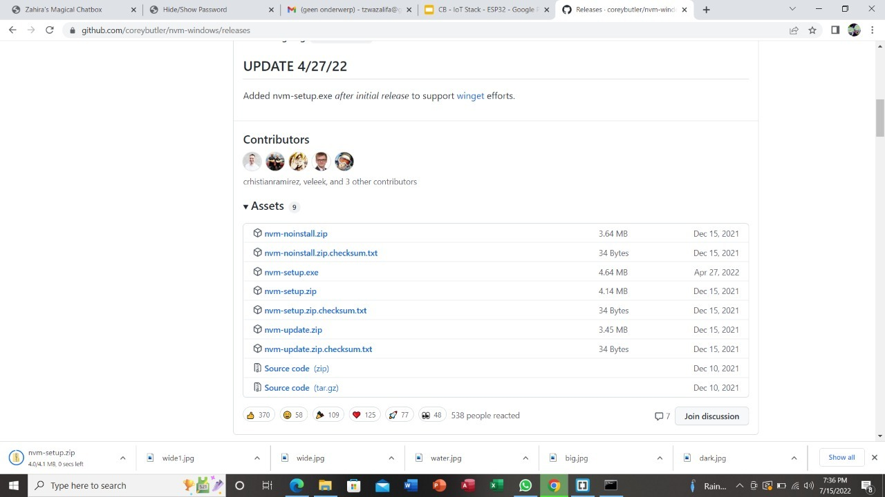
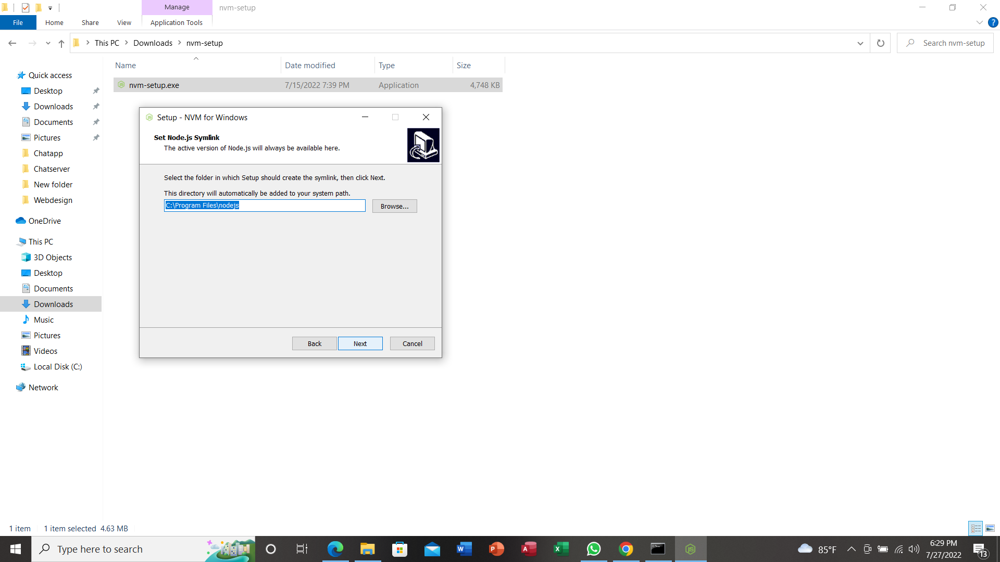
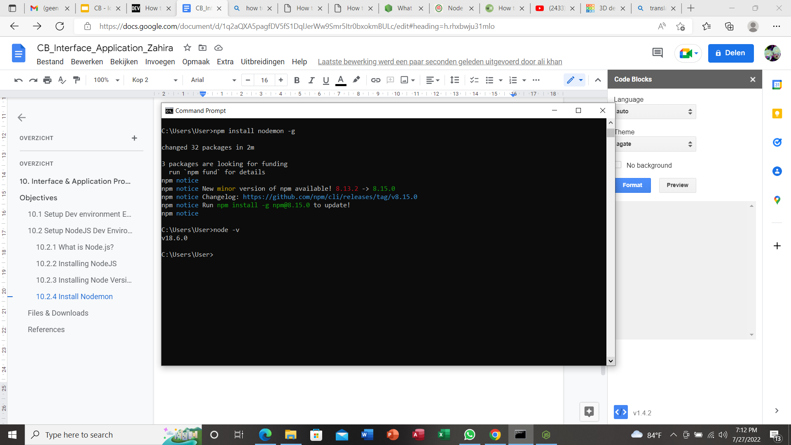

10. Interface & Application Programming
Objectives
Wk 1
- [x] Setup Dev Environment for ESP32 S2
- [x ] Setup NodeJS Dev Environment on your PC
- [ ] Explain the HackOmation quadrant in relation to your final project.
- [ ] Build UI mockups for your Final Project and HTML Layout
Wk 2
- [ ] Build HTML5 Chat app
* Draw mockup / layout
* frame and add id’s to <div>’s
* Style the page and
* wire up the JS code and understand
Wk 3
- [ ] Build Chat app back-end NodeJS
* Build NodeJS server side to:
* host your ChatApp (Express static HTML)
* Build / test API endpoints (for: users & messages)
Wk 4
- [ ] Setup MongoDB datastore & connect via NodeJS
* Setup MongoDB datastore + mongoose ODM (Object-Document-Manager)
* Store and recall message data using an API (ex. request top 100 msg)
* Wire up MongoDB to API endpoints
* Update app-flow to use back-end for Users and “old” messages
Wk 5
- [ ] Create data-bound widgets to display sensor data
* On ESP32 add MQTT client + ArduinoJSON
* Send Sensor data to MQTT server (as a JSON object)
* Create a DataCard, a Gauge and a time Chart widget on Dashboard (use chat app)
* Strategy on DataBinding and Widget updating (Last updated)
* User Login/Pw (state persistence)
- [ ] Add Screenshots and description of the process of creation.
- [ ] Describe the design & programming steps
- [ ] Screenshots or video of your Prototype/app working
- [ ] Describe any errors or problems with the process and how you fixed them.
- [ ] Include all the files you created for download.
10.1 Setup Dev environment ESP32 S2
10.1.1 What is ESP32?
ESP32, like Arduino, is a development board. That means it has all the features you need to create your projects. ESP32 is a low-powered, low-cost microcontroller (MCU) board, with both Wi-Fi and Bluetooth built in, and is based on a dual-core processor mechanism.
10.1.2 Install ESP32 board in Arduino IDE
There’s an add-on for the Arduino IDE that allows you to program the ESP32 using the Arduino IDE and its programming language.
I used the following instructions to install the ESP32 board in Arduino IDE:
- In your Arduino IDE, go to File> Preferences and enter the following into the “Additional Board Manager URLs” field:
https://raw.githubusercontent.com/espressif/arduino-esp32/gh-pages/package_esp32_dev_index.json
- Open the Boards Manager. Go to Tools > Board > Boards Manager…
- Search for ESP32 and press install button for the “ESP32 by Espressif Systems“:
- Checking if ESP32 is available
10.1.3 Setting Up SPIFFS
ESP32 supports the SPI flash file system or Serial Peripheral Interface Flash File System (SPIFFS). It is a file system created by partitioning the SPI NOR flash of ESP32 into binary file region and file system region. We can use SPIFFS to store files in SPI flash without having to use any external memory with ESP32.
I downloaded the tool archive of spiffs from this link: me-no-dev/arduino-esp32fs-plugin: Arduino plugin for uploading files to ESP32 file system (github.com)
Then I located the Arduino file in the document folder in my computer and I created a folder in it called Tools. In that folder I created another folder called ESP32FS and in that folder I created another tool in which I placed the esp32fs.jar file.
To check if everything is done right i restarted my arduino IDE and searched for “esp32 sketch data upload”
10.2 Setup NodeJS Dev Environment on your PC
10.2.1 What is Node.js?
Node.js is an open-source, cross-platform JavaScript runtime environment used for executing JavaScript code outside of a web browser. Node.js lets developers use JavaScript to write command line tools and for server-side scripting -running scripts server-side to produce dynamic web page content before the page is sent to the user's web browser.
10.2.2 Installing NodeJS
To install NodeJS i used this link:Node.js (nodejs.org)
I downloaded the latest version of NodeJS :18.6.0
- Open the NodeJS download site and click the current windows option.
- Open the NodeJS setup file that can be found in the download folder of the computer and keep clicking next till you get the install button on the setup window and click on the install.
- Open the command prompt window from the start menu and enter the “version” command. Type in node -v and press enter and you should be greeted by a message that says the version of the NodeJS you have installed.
10.2.3 Installing Node Version Manager (NVM)
Node Version Manager NVM is a version manager for Node.js, it allows you to quickly install and use different versions of node via the command line.This is very helpful if you are working on multiple projects of Node.js having different versions, etc.
To install NVM I used the following instructions:How to install Node Version Manager (NVM) for Windows 10? - DEV Community
- Click on the “npm-setup-zip” link
- Locate the zip file in the download folder and extract it
- Open the nvm-setup.exe file to launch the installer and choose the “i accept the agreement” option.

- Select the destination location to install and symlink for Node.js
- At the end click on the install button and then on the finish button
- Now open the command prompt and type in nvm -v to verify if the nvm installation was successful and to check the version of nvm installed.
10.2.4 Install Nodemon
Nodemon is a command-line interface (CLI) utility. That will watch the file system for any file changes in the directory you ran Nodemon in. And automatically restart your application process either is a hanging process (such as a web server process) or a one-time run application that cleanly exits
It can be Installed using npm. Just use nodemon instead of node to run your code, and now your process will automatically restart when your code changes.
Open the command prompt and type in npm install nodemon -g to install nodemon.
10.2.5 Node.js - First application
A Node.js web application is build with 3 parts:
- Import module to create web server
We use the require directive to load the http module and store the returned HTTP instance into an http variable as follows .
var http = require("http"); |
We use the created http instance and call http.createServer() method to create a server instance and then we bind it at port 3000 using the listen method associated with the server instance. Pass it a function with parameters request and response. Write the sample implementation to always return "Hello World".
- Read client requests and send response back to client
http.createServer(function (request, response) {
// Send the HTTP header
// HTTP Status: 200 : OK
// Content Type: text/plain
response.writeHead(200, {'Content-Type': 'text/plain'});
// Send the response body as "Hello World"
response.end('Hello World\n');
}).listen(3000);
// Console will print the message
console.log('Server has started on port 3000'); |
Now we will put the 2 codes together in a file called index.js and save it in the chat server folder .
Then we will open the command prompt and type in nodemon index.js and we must receive the following message : 'Server has started on port 3000!'
Next we will open a browser and type in http://localhost:3000/ to open the http server running on port 3000.

Files & Downloads
[Week 12 files](week12.zip)
Containing:
- design files
- Code for the controller
References
Attiny85 as a StepDir Stepper Motor Controller
Getting Extra Pins on ATtiny
What is ESP32, how it works and what you can do with ESP32? – Circuit Schools